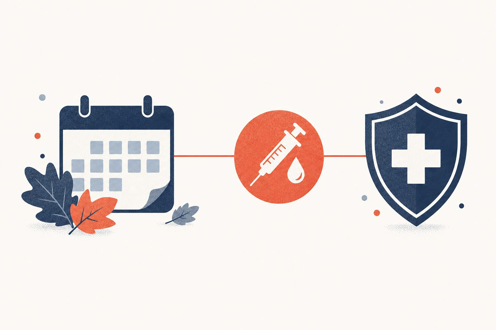

Key Takeaways
- U.S. flu season usually occurs in the fall and winter, and flu activity most often peaks between December and February.[1]
- Everyone 6 months and older should get a flu vaccine each year, ideally by the end of October.[3]
- When the vaccine viruses are similar to those spreading, studies show flu vaccination reduced the risk of a flu-related doctor's visit by 40% to 60%; it can also reduce severity of illness in people who still get sick.[12][2]
- The flu shot cannot cause the flu; side effects such as a sore arm or low-grade fever are generally mild and go away within a few days.[4][9]
- Flu, cold, and COVID-19 share symptoms. Flu symptoms are typically more intense and begin more abruptly than a cold, and testing is needed to tell flu from COVID-19.[11][6]
- Vaccination is the single best prevention; handwashing and staying home when sick also help.[7]
- Get medical care right away for difficulty breathing, persistent chest pain or pressure, confusion, or fever or cough that improve but then return or worsen.[13]

Every fall and winter, influenza spreads across the United States.[1] For the 2024-2025 season, which the CDC classified as high severity, the CDC's preliminary estimates were 51 million flu-related illnesses, 710,000 hospitalizations, and 45,000 deaths.[15] The CDC also estimates that flu vaccination prevented about 10 million flu illnesses and 180,000 hospitalizations that season.[15]
Yet every fall the same questions surface: When does flu season actually start? Is it too late to get the shot? Can the shot give me the flu? How do I know if this is flu, a cold, or COVID? This guide answers those questions directly, using the CDC's current recommendations and the published evidence on vaccine effectiveness. It is the seasonal companion to our Influenza and Common Cold guide, which covers symptoms and antiviral treatment in depth.
When Does Flu Season Start and End?
In the United States, flu season usually occurs in the fall and winter, and most of the time flu activity peaks between December and February.[1] Seasonal flu viruses are detected year-round, but they typically circulate during the fall and winter.[1]
The exact timing shifts from year to year. Some seasons peak in December; others peak in February or even March.[1] The CDC tracks flu activity through FluView, its weekly influenza surveillance report.[10] If you want to know how active flu is right now, that is the source to check.
For planning purposes, the practical takeaway is simple: September and October are generally good times to be vaccinated, and ideally everyone should be vaccinated by the end of October.[3]
Flu Season Months and Peak
Flu activity most often peaks in February. Across the 1982-1983 through 2023-2024 seasons, flu activity peaked in February in 17 seasons, followed by December (7 seasons), January (6 seasons), and March (6 seasons).[1] The chart below shows those counts.
The CDC recommends that, ideally, everyone be vaccinated by the end of October. It takes about two weeks after vaccination for antibodies that protect against flu to develop, so an October shot gives that protection time to build before activity usually peaks between December and February.[3][1]
How Bad Is Flu Season This Year?
For the 2026-2027 season, the best source is the CDC's weekly surveillance report, described below. For context, the CDC classified the 2024-2025 season as a high severity season across all ages and for each age group:[15]
These are model-based estimates, not exact counts: the CDC uses models to estimate the number of flu illnesses, medical visits, hospitalizations, and deaths.[8] The 2024-2025 figures are preliminary and will be updated.[15] For a current picture of how this season is unfolding, see the CDC's Weekly U.S. Influenza Surveillance Report (FluView), which is published weekly.[10]
Flu Shot: Who Should Get It and When
The CDC recommends that everyone 6 months and older get a flu vaccine every season, with rare exceptions.[3] The ideal timing is by the end of October, and the CDC's clinical guidance says vaccination should continue after October and throughout the flu season as long as influenza viruses are circulating.[16]
Vaccination is especially important for people at higher risk of serious flu complications, and for the people around them:
| Higher-risk groups | Why vaccination matters |
|---|---|
| Adults 65 and older | Flu complications, hospitalizations, and deaths are generally most common in this age group; the CDC preferentially recommends high-dose, adjuvanted, or recombinant flu vaccines for them.[3] |
| Children under 5, especially under 2 | Children younger than 5, especially those younger than 2, are at higher risk of serious flu complications; children younger than 6 months are too young to get a flu shot.[17][3] |
| Pregnant people | Pregnant people are at higher risk of serious flu complications; vaccination in the third trimester can help protect infants for the first few months after birth.[17][3] |
| People with chronic conditions | People of any age with certain chronic medical conditions, such as asthma, diabetes, or heart disease, are at higher risk of serious flu complications.[17] |
| Caregivers and health care workers | The CDC lists health care personnel, and household contacts and caregivers of people with medical conditions that raise their risk, among the groups to vaccinate first when vaccine supply is limited.[3] |
If you have an egg allergy, the CDC says you may get any flu vaccine, egg-based or not, that is otherwise appropriate for your age and health.[3]
How Well Does the Flu Shot Work?
Flu vaccine effectiveness is genuinely variable, and it is worth being honest about that. The protection a flu vaccine provides varies from season to season and depends in part on the age and health of the person vaccinated and on how closely the vaccine viruses match those in circulation. During seasons when circulating viruses have drifted from the vaccine viruses, effectiveness can be reduced.[2] During seasons when the viruses in the vaccine are similar to those spreading, studies show flu vaccination reduced the risk of a flu-related doctor's visit by 40% to 60%.[12]
The CDC's vaccine effectiveness studies, which use laboratory-confirmed flu as the outcome, report overall adjusted effectiveness of 29% for 2018-2019, 39% for 2019-2020, and 44% for 2023-2024, with preliminary estimates of 56% for 2024-2025 and 36% for 2025-2026.[5]
Two things matter more than the headline number. First, flu vaccination has been shown in studies to reduce severity of illness in people who get vaccinated but still get sick.[2] For example, a 2021 narrative review noted that among adults hospitalized with flu, vaccinated patients had a 26% lower risk of ICU admission and a 31% lower risk of death from flu than unvaccinated patients.[12] Second, protection may decrease over time, which is why the CDC advises most adults not to get vaccinated early, in July or August.[3]
Flu Shot Side Effects
The most common concern people raise is whether the flu shot can give you the flu. It cannot: flu vaccines cannot cause flu illness. Flu shots are made with either inactivated (killed) viruses or only a single protein from an influenza virus. The nasal spray vaccine contains live viruses, but they are changed (weakened) so that they cannot give you the flu.[4][9]
Side effects are generally mild and go away on their own within a few days:[4]
| Side effect | How common | What to expect |
|---|---|---|
| Soreness, redness, tenderness, or swelling at the injection site | Most common | Usually begins soon after vaccination and lasts 1 to 2 days.[9] |
| Low-grade fever | May occur | Usually lasts 1 to 2 days; flu vaccines cannot cause flu illness.[9] |
| Headache or muscle aches | May occur | Usually lasts 1 to 2 days.[9] |
| Life-threatening allergic reaction | Rare | Call 911 and get to the nearest hospital. People with severe, life-threatening allergies to flu vaccine or any of its ingredients should not get a flu shot.[4] |
The flu shot, like other injections, can occasionally cause fainting.[4]
Is It Too Late to Get the Flu Shot?
Generally, no. Vaccination can still be beneficial as long as flu viruses are circulating, and if you have not been vaccinated by the end of November, it can still be protective to get vaccinated in December or later.[9] Getting vaccinated by the end of October is still the goal, because protective antibodies take about two weeks to develop and flu activity most often peaks between December and February.[3][1]
If you are already moderately or severely ill, with or without fever, the CDC's clinical guidance lists that as a general precaution for vaccination, so ask a clinician whether to wait until you recover.[16]
Flu vs Cold vs COVID-19 vs RSV
Flu, colds, COVID-19, and RSV are all respiratory illnesses with overlapping symptoms. Colds and flu share many symptoms, so it can be difficult (or even impossible) to tell them apart by symptoms alone. In general, flu is worse than the common cold, and its symptoms are typically more intense and begin more abruptly:[11]
| Feature | Common cold | Flu | COVID-19 |
|---|---|---|---|
| How symptoms start | Less abruptly than flu[11] | Usually suddenly, typically 1 to 4 days after infection[13][6] | Typically 2 to 5 days after infection, and up to 14 days[6] |
| Overall severity | Usually milder than flu[11] | Typically more intense than a cold; can cause severe illness[11][6] | Can cause severe illness, even in healthy people[6] |
| Runny or stuffy nose | More likely than with flu[11] | Can occur[13] | Can occur[6] |
| Fever or chills, cough, sore throat, aches, headache, fatigue | Colds and flu share many symptoms[11] | Common flu symptoms[13] | Shared with flu[6] |
| Change in or loss of taste or smell | Not listed by the CDC | Can occur[6] | More frequent with COVID-19[6] |
| Telling it apart | Hard by symptoms alone[11] | Special tests can tell if a person has flu[11] | Testing is needed to confirm[6] |
Flu and COVID-19 in particular cannot be told apart by symptoms alone, and both can cause severe illness. Testing is needed to confirm a diagnosis.[6] RSV usually causes mild, cold-like symptoms, but infants and older adults are more likely to develop severe RSV illness.[18]
How to Prevent the Flu
The single best way to reduce your risk of flu and its potentially serious complications is to get vaccinated every year.[7] Beyond vaccination, everyday preventive actions can help stop the spread of germs:[7]
- Avoid close contact with people who are sick, and stay home when you are sick.[7]
- Cover your mouth and nose when coughing or sneezing, which may keep those around you from getting sick.[7]
- Wash your hands often, and use an alcohol-based hand rub if soap and water are not available.[7]
- Avoid touching your eyes, nose, and mouth, because germs can spread when you touch something contaminated and then touch your face.[7]
- Clean frequently touched surfaces, such as countertops, handrails, and doorknobs, regularly.[7]
If you do get sick, early antiviral treatment, such as oseltamivir (Tamiflu), can shorten the duration of fever and illness symptoms. The benefit is greatest when treatment starts early, especially within 48 hours of illness onset, and antiviral treatment is recommended as soon as possible for people at higher risk of flu complications.[14] Our Influenza and Common Cold guide covers treatment in detail.
When to See a Doctor
Most people who get flu recover in a few days to less than two weeks. The CDC lists these emergency warning signs in adults; anyone with them should get medical care right away:[13]
- Difficulty breathing or shortness of breath
- Persistent pain or pressure in the chest or abdomen
- Persistent dizziness, confusion, or inability to arouse
- Seizures
- Not urinating
- Severe muscle pain, or severe weakness or unsteadiness
- Fever or cough that improve but then return or worsen
- Worsening of chronic medical conditions
People at higher risk of complications should call a clinician as soon as possible if they have respiratory symptoms, because antiviral treatment has the greatest benefit when started early, especially within 48 hours of illness onset.[14] In children, warning signs include fast breathing or trouble breathing, bluish lips or face, ribs pulling in with each breath, dehydration (no urine for 8 hours, dry mouth, no tears when crying), not being alert or interacting when awake, seizures, and any fever in a baby younger than 12 weeks.[13]
Frequently Asked Questions
In the United States, flu season usually occurs in the fall and winter. Flu activity most often peaks between December and February; from the 1982-1983 through 2023-2024 seasons, February was the most common peak month.[1]
No. Flu vaccines cannot cause flu illness. Flu shots are made with either inactivated (killed) viruses or only a single protein from an influenza virus. The nasal spray vaccine contains live viruses that are attenuated (weakened) so that they will not cause illness.[9]
Seasonal flu viruses are detected year-round in the United States, but they typically circulate during the fall and winter, and flu activity most often peaks between December and February. The month of the peak varies from season to season.[1]
Generally no. Vaccination can still be beneficial as long as flu viruses are circulating. If you have not been vaccinated by the end of November, it can still be protective to get vaccinated in December or later.[9]
Flu vaccine effectiveness varies from season to season. During seasons when the viruses in the vaccine are similar to those spreading, studies show flu vaccination reduced the risk of a flu-related doctor's visit by 40% to 60%. Studies have also shown that flu vaccination can reduce severity of illness in people who get vaccinated but still get sick.[2][12]
In general, flu is worse than the common cold, and flu symptoms are typically more intense and begin more abruptly. People with colds are more likely to have a runny or stuffy nose. Because colds and flu share many symptoms, it can be difficult to tell them apart by symptoms alone; special tests can tell if a person has flu.[11]
Flu and COVID-19 share many symptoms, including fever or chills, cough, shortness of breath, fatigue, sore throat, and muscle pain or body aches. You cannot tell them apart by symptoms alone; testing is needed to confirm a diagnosis.[6]
Yes. The CDC says that if you are pregnant you should get a flu shot, and you should not get the nasal spray flu vaccine. Pregnant people are among the groups at higher risk of serious flu complications, flu vaccine can be given at any time during pregnancy, and vaccination in the third trimester can help protect infants for the first few months after birth.[3][16][17]
Get medical care right away for emergency warning signs such as difficulty breathing or shortness of breath, persistent pain or pressure in the chest or abdomen, persistent dizziness or confusion, seizures, or fever or cough that improve but then return or worsen. People at higher risk of complications should call a clinician as soon as possible, because antiviral treatment has the greatest benefit when started early, especially within 48 hours of illness onset.[13][14]
References
- Centers for Disease Control and Prevention (CDC). Flu Season. Last reviewed September 26, 2025. Accessed November 7, 2026. https://www.cdc.gov/flu/about/season.html
- Centers for Disease Control and Prevention (CDC). Key Facts About Seasonal Flu Vaccine. Last updated September 1, 2026. Accessed November 7, 2026. https://www.cdc.gov/flu/vaccines/keyfacts.html
- Centers for Disease Control and Prevention (CDC). Who Needs a Flu Vaccine. Last reviewed September 18, 2025. Accessed November 7, 2026. https://www.cdc.gov/flu/vaccines/vaccinations.html
- Centers for Disease Control and Prevention (CDC). Flu Vaccine Safety. Last reviewed August 25, 2023. Accessed November 7, 2026. https://www.cdc.gov/flu/vaccine-safety/index.html
- Centers for Disease Control and Prevention (CDC). CDC Seasonal Flu Vaccine Effectiveness Studies. Last reviewed March 16, 2026. Accessed November 7, 2026. https://www.cdc.gov/flu-vaccines-work/php/effectiveness-studies/index.html
- Centers for Disease Control and Prevention (CDC). Similarities and Differences between Flu and COVID-19. Last reviewed September 17, 2024. Accessed November 7, 2026. https://www.cdc.gov/flu/about/flu-vs-covid19.html
- Centers for Disease Control and Prevention (CDC). Healthy Habits to Prevent Flu. Last updated September 1, 2026. Accessed November 7, 2026. https://www.cdc.gov/flu/prevention/actions-prevent-flu.html
- Centers for Disease Control and Prevention (CDC). About Estimated Flu Burden. Last reviewed February 25, 2026. Accessed November 7, 2026. https://www.cdc.gov/flu-burden/php/about/index.html
- Centers for Disease Control and Prevention (CDC). Misconceptions About Seasonal Flu and Flu Vaccines. Last reviewed September 6, 2024. Accessed November 7, 2026. https://www.cdc.gov/flu/prevention/misconceptions.html
- Centers for Disease Control and Prevention (CDC). Weekly U.S. Influenza Surveillance Report (FluView). Last reviewed September 20, 2024. Accessed November 7, 2026. https://www.cdc.gov/fluview/index.html
- Centers for Disease Control and Prevention (CDC). Cold Versus Flu. Last reviewed August 8, 2024. Accessed November 7, 2026. https://www.cdc.gov/flu/about/coldflu.html
- Centers for Disease Control and Prevention (CDC). Benefits of Flu Vaccination. Last reviewed May 28, 2026. Accessed November 7, 2026. https://www.cdc.gov/flu-vaccines-work/benefits/index.html
- Centers for Disease Control and Prevention (CDC). Signs and Symptoms of Flu. Last reviewed August 26, 2024. Accessed November 7, 2026. https://www.cdc.gov/flu/signs-symptoms/index.html
- Centers for Disease Control and Prevention (CDC). Influenza Antiviral Medications: Summary for Clinicians. Last reviewed March 10, 2026. Accessed November 7, 2026. https://www.cdc.gov/flu/hcp/antivirals/summary-clinicians.html
- Centers for Disease Control and Prevention (CDC). 2024-2025 Influenza Season Summary: Severity, Disease Burden, and Burden Prevented. Last updated March 12, 2026; estimates preliminary. Accessed November 7, 2026. https://www.cdc.gov/flu-burden/php/data-vis-vac/2024-2025-prevented.html
- Centers for Disease Control and Prevention (CDC). Interim Clinical Considerations for the Use of Seasonal Influenza Vaccines in the United States (2026-2027 season). Last reviewed September 1, 2026. Accessed November 7, 2026. https://www.cdc.gov/flu/hcp/vax-summary/seasonal-influenza-vaccines.html
- Centers for Disease Control and Prevention (CDC). About Influenza. Last reviewed February 26, 2026. Accessed November 7, 2026. https://www.cdc.gov/flu/about/index.html
- Centers for Disease Control and Prevention (CDC). About RSV. Last reviewed December 30, 2025. Accessed November 7, 2026. https://www.cdc.gov/rsv/about/index.html